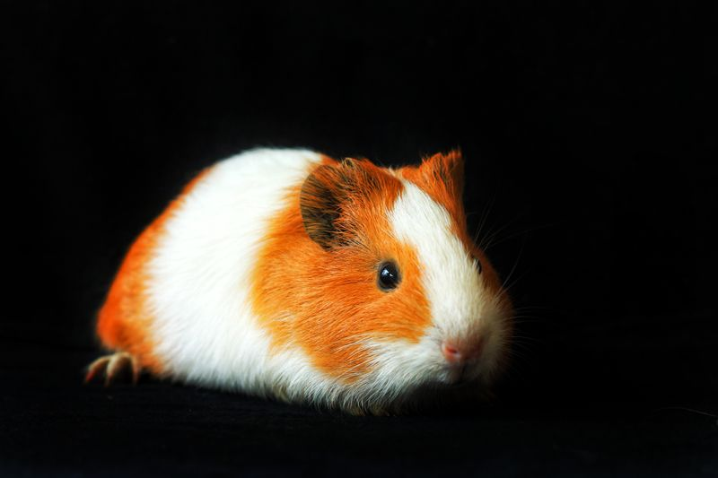
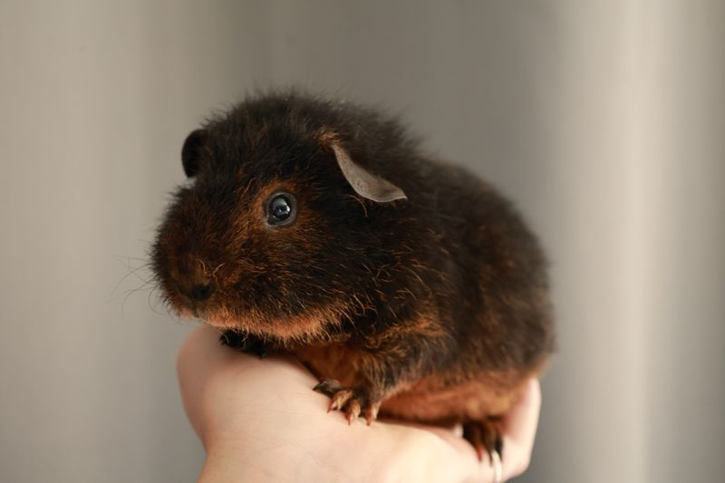
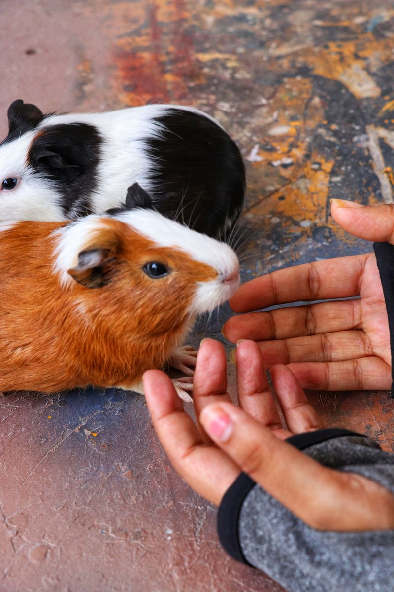

Welcome to piggy cinema
Tiny paws.
Big adventures.
Watch real guinea pigs investigating toys at Smithsonian’s National Zoo. Go straight to YouTube with one click!
Opens YouTube in a new tab.
Guinea Pig Toys · Smithsonian’s National Zoo.
If the player cannot load, watch the video on YouTube. Internet access is needed.
More whiskers. More wheeks.
The guinea pig photo club.
Nine adorable moments. Tap a photo to see it full size.







Photos from Pexels, under the Pexels license.
Can you spot it?
Look for a twitching nose, a curious explorer, and a guinea pig investigating a toy. Which little moment is your favorite?
Video source: Smithsonian Institution.